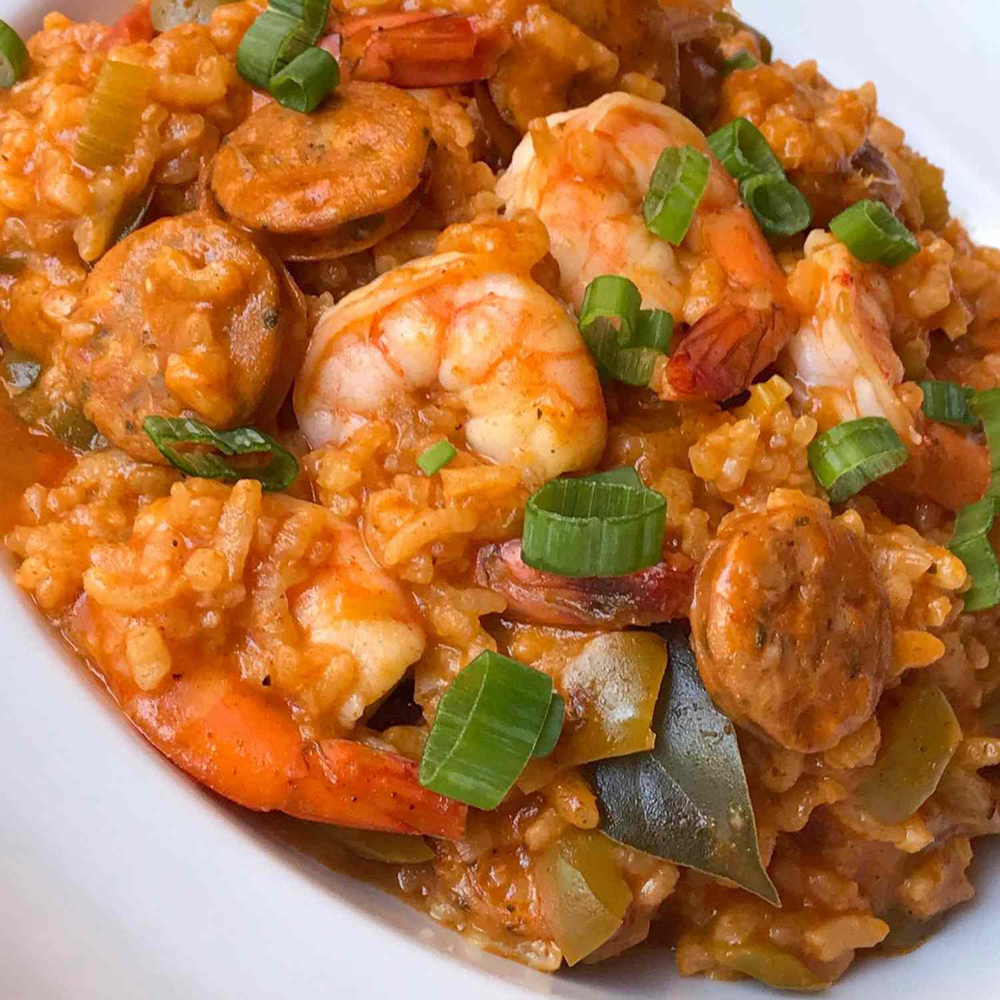

Homemade Jambalaya
Ingredients
- 2 tablespoons margarine or butter
- 1/4 cup chopped onion
- 1/3 cup chopped celery
- 1/4 cup chopped green pepper
- 1 (14.5 ounce) can diced tomatoes
- 1 1/2 cups chicken broth
- 2/3 cup long grain white rice
- 1 teaspoon dried basil
- 1/4 teaspoon garlic powder
- 1/4 teaspoon black pepper
- 1/4 teaspoon hot sauce
- 1 bay leaf
- 2/3 cup diced cooked chicken breast
- 2/3 cup cooked crumbled italian sausage
- 2/3 cup peeled cooked shrimp
Directions
- Melt margarine in a large saucepan over medium heat. Stir in onion, celery, and green pepper; cook until softened, about 5 minutes. Pour in diced tomatoes, chicken broth, and rice; season with basil, garlic, pepper, hot sauce, and bay leaf. Bring to a boil over medium-high heat, then turn heat to medium-low, cover, and simmer until the rice is done, about 20 minutes.
- Once the rice has cooked, stir in chicken, sausage, and shrimp. Simmer for a few minutes until heated through. Remove bay leaf before serving.